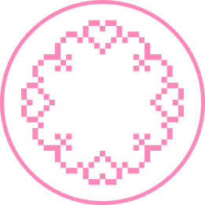
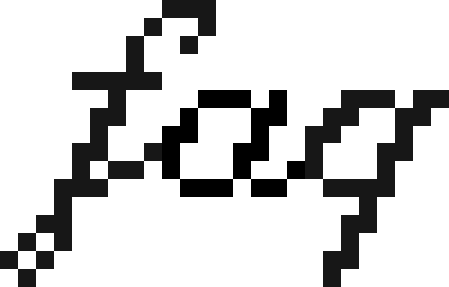

Ručno heklane mini KROSH torbe od recikliranog pamuka sa podesivim kaišem.

Izaberi boju
Skrinšotuj svoju torbu, a klikom na dugme bićeš preusmerena na KROSH Instagram gde možeš da završiš porudžbinu. Poruka se neće poslati automatski.
Svaka mini torba ima podesiv kaiš, pa možeš da je nosiš
u ruci, na ramenu, preko tela ili oko struka. Dovoljno
je da povučeš trake sa obe strane da ga skratiš ili
produžiš. Zatvara se magnetnim dugmetom.
O održavanju i ostalim detaljima pročitaj u
FAQ.

Veličina je navedena uz svaku torbu (širina × visina) i odnosi se samo na deo u koji stavljaš stvari, bez kaiša. Pošto su heklane pamučne trake fleksibilne, torba se kada se napuni malo raširi. Dimenzije se mogu malo razlikovati od torbe do torbe, jer koristim isključivo reciklirani pamuk koji dolazi u različitim serijama i debljinama.
Ako ti je kaiš predugačak, trake mogu pažljivo da se skrate.
Mini KROSH torba je zamišljena za šetnje, kafe i izlaske. U nju staju telefon, novčanik, labelo i još par sitnica, taman koliko ti treba.
Praktična je jer je nosiš kako ti odgovara (u ruci, na ramenu, preko tela ili oko struka), a magnetno dugme se otvara i zatvara jednom rukom.
Pre pranja skini metalne alke koje spajaju kaiš i torbu, a torbu operi posebno. Najbolje je prati je ručno, u mlakoj vodi, bez preteranog uvijanja ili stiskanja. Suši se prirodno, položena na ravnu površinu.
Većina torbi je odmah dostupna, a pošto određene boje materijala imam u ograničenoj količini, većina kombinacija postoji u samo jednom komadu. Ako je torba koju želiš već otišla, a imam dovoljno materijala, mogu da napravim novu, i tada je rok izrade 7–14 dana, a često i ranije. Zato se pre porudžbine javi na Instagramu pa da proverimo dostupnost.